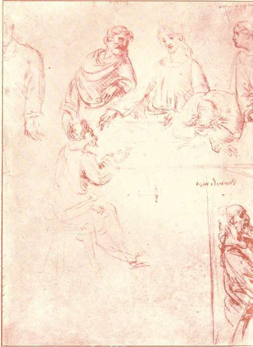
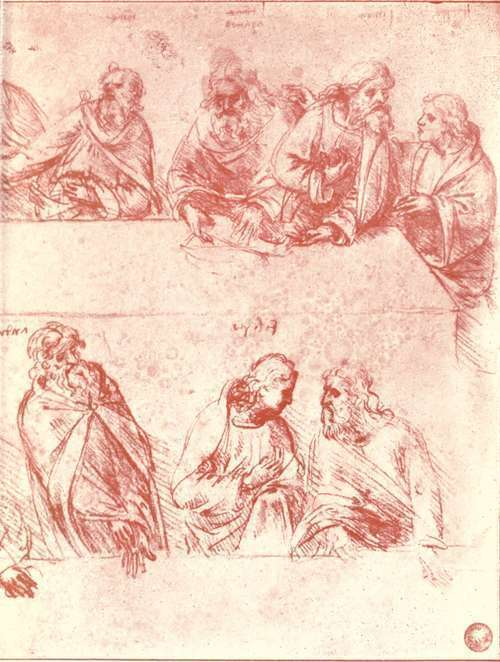
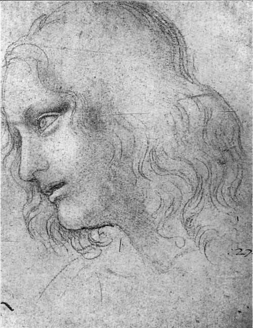

The Pictures By Leonardo Da Vinci
Description
This section is from the book "Leonardo Da Vinci", by Edward McCurdy. Also available from Amazon: Leonardo Da Vinci.
The Pictures By Leonardo Da Vinci
WHAT of Vasari's story of how Leonardo painted an angel in Verrocchio's Baptism of Christ ?
Vasari is naturally, though not always justly, most suspected when most picturesque. Fact may take the hue of romance. His statement of how Leonardo hired musicians to play and sing to Mona Lisa during the time that he painted, in order so to keep the intent expression, is paralleled by a passage in Leonardo's own MS. advocating such a practice.1 We may dismiss as an obvious embellishment the touch about Verrocchio abandoning painting out of chagrin on seeing Leonardo's angel. No such supposition of improbability attaches to the statement that Leonardo executed a part of one of Verrocchio's commissions. It was an occurrence common enough in the relation of master and pupil. But so far as the question can be decided, it must be from the evidence of the picture, now in the Accademia, and there is no agreement among critics in their interpretation. Morelli considers the whole picture the work of Verrocchio. Mr. Berenson sees in the drapery of the kneeling angel the work of another as yet unidentified pupil of Verrocchio.
1 Ludwig, 36.
Recent German critics trace the work of Leonardo not only in the angel, but in parts of the other angel and in the landscape and background. Dr. Bayersdorfer claimed that the line of profile of the angel as originally drawn by Verrocchio is still visible, and that the contrast between this type and the altered profile is a potent witness to the intervention of Leonardo's hand. There seems to be some such line of profile, but I should hesitate to found any theory on it in view of the repainted condition of the whole picture, which, after having been originally painted in tempera, has been restored by a later hand in an oil medium.
The evidence of the picture in this state, while not availing to substantiate the tradition, yet lends it some contributory support. The two angels have certain resemblances of detail to the types of drawings by the two masters. In that admittedly by Verrocchio the cartilage of the nose is sunken, the nose itself is rather short and deep set, and with nostrils dilated; the eyes have large pupils and large irises; the hair is naturally curly; the face is square, hard, and comparatively flat; all of which characteristics occur in the drawing of an angel's head by Verrocchio in the Uffizi, No. 130. The type of the other face is longer and more oval. The nose is aquiline. The hair is not naturally thick and curly, as in the other three heads. The hair on the eyebrows is hardly drawn at all. In all these points the head more approximates to the type of the youthful heads in Leonardo's drawings.
The manner of the folds of the robe upon the kneeling figure may be considered in connection with Leonardo's study of drapery at Windsor (Braun, 196). The robe falls from the waist to the inner bend of the knee, with almost exactly similar folds, and resembles it also in the way it is caught back on the leg with two naturally falling pleats, showing the whole outline of the leg and foot. The folds fall more inevitably with a less circular angle than those in the mantle of S. John, where the roundness of the loops of the folds almost approaches that of Perugino's drawings.
Plate 23. Study For "e Last Supper"
A linari photo - Accademia, Venice
The folded hands of the second angel have a delicacy of modelling and softness of contour which may serve to suggest in far-away fashion the folded hands of Mona Lisa; but Verrocchio's supreme subtlety in the delineation of hands, as revealed in the Lady with the Bouquet, would serve to render any theory that these hands could not be his merely a hazardous attempt to limit his power.
Of the peculiar mistiness and effect of " atmosphere " of the landscape it is hard to speak positively, for there is so little with which to compare it and show what was Verrocchio's treatment of landscape; but it is such as Verrocchio did not transmit to any other of his pupils, not even to Lorenzo di Credi, whose outlines are all harder because less moulded, and with less gradation of light. The larger di Credi Annunciation in the Uffizi is perhaps his nearest approach to this effect.
This haze of distance, tremulous in outline, silver-gray with breaking light, is a characteristic of all Leonardo's landscape backgrounds, varying very little in method during the years that intervened between the earliest and the latest of these compositions. It is the same haze of distance, more tranquil, more pietistic in effect, which is found also in certain of the works of Piero de' Franceschi, whose influence over Leonardo, if one may judge purely from internal evidence, was greater than that of any of his contemporaries except Verrocchio. There is no record of any direct connection between the two painters, but the proximity of Arezzo to Florence renders it extremely probable that Leonardo was acquainted with Piero's work in S. Francesco at an early period. His interest in the presentment of the scientific theory of his art was such that we may assume that if it were in any way possible he would know the elder painter's treatises on geometry and perspective even before the date of his acquaintance in Milan with Fra Luca Pacioli, who was Piero's fellow-townsman and pupil.
In the result in practice deduced from such scientific study Piero was also his forerunner. The Vision of Constantine, at Arezzo, is the most triumphant victory of the problem of the effect of light set and solved in art previous to the Vierge aux Rockers. It is in added subtilty of rendering of this problem that Leonardo's art changed most after he reached maturity. So completely did the desire to give expression to it ultimately dominate him that the St. John in the Louvre seems primarily a study of its gradation, and only secondarily a figure painting. How perfectly prepared a ground-work his art offered, even in its inception, for the incoming of strange lights and shadows, is apparent in the Annunciation, in the Louvre. This small sketch-it is about 5 inches high, by 2 feet long-is, indisputably,-as far as judgment purely from internal evidence can make the attribution of a work of art indisputable-an early work of Leonardo's. The superior delicacy of its texture supplies perhaps the most cogent reason why the attribution to Leonardo of the angel in the Baptism of Christ must be adjudged at most a matter of uncertainty.
Plate 24. Study For Head Of S. Philip
New Gallery Portfolio - Royal Library, Windsor
Continue to:
Tags
leonardo da vinci, pictures, drawings, galleries, statues, da vinci